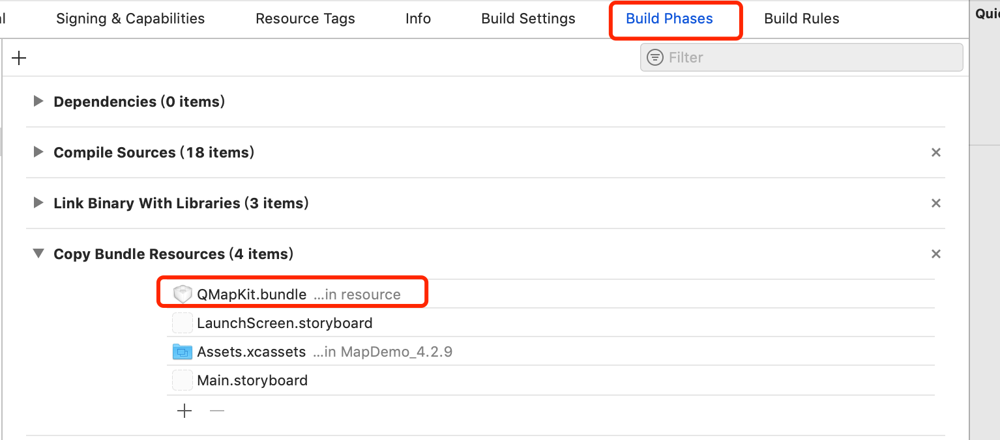

显示基础地图
在显示地图之前，请您保证已正确的配置SDK和为地图SDK设置了正确的Key。具体步骤请参考接入指南
在这里，我们介绍如何将地图显示出来。
显示地图通常有2种方法：StoryBoard和代码动态添加。
方法1. 通过StoryBoard显示地图
根据接入指南，在Build Phases中添加链接QMapKit.framework并在Other Linker Flags中添加-ObjC
在Storyboard的ViewController中为地图添加UIView，并将其Custom Class指定为QMapView

运行工程。
方法2. 通过代码动态显示地图
1. 配置头文件
创建您自己的ViewController.h和.m文件。并在ViewController.h头文件中引入地图的头文件，并遵循地图的协议接口
#import <UIKit/UIKit.h>
//引入地图库头文件
#import <QMapKit/QMapKit.h>
//为了接受地图回调，需要符合QMapViewDelegate协议
@interface ViewController : UIViewController <QMapViewDelegate>
@property (nonatomic, strong) QMapView *mapView;
@end
2.实例化地图实例
在ViewControoler中创建一个QMapView的视图实例(View)，并将它添加到View系统上即可显示地图内容。
在ViewController.m文件添加实例化QMapView的代码
- (void)viewDidLoad
{
[super viewDidLoad];
//初始化地图实例
self.mapView = [[QMapView alloc] initWithFrame:self.view.bounds];
//接受地图的delegate回调
self.mapView.delegate = self;
//把mapView添加到view中进行显示
[self.view addSubview:self.mapView];
}
运行工程
地图显示效果如下
[
常见问题
1. 地图白屏或紫屏
原因：没有正确添加资源文件，则有可能出现地图加载不成功现象。

解决：将QMapKit.bundle添加到工程中，如下图所示：

2. 显示地图时崩溃
原因：工程的链接参数未正确配置 -ObjC。请保证已添加和大小写一致。
3. 地图显示"鉴权失败,请检查你的Key"
原因：key不正确，或者bundleId不正确。请在官网检索是否为本key开通了SDK权限。